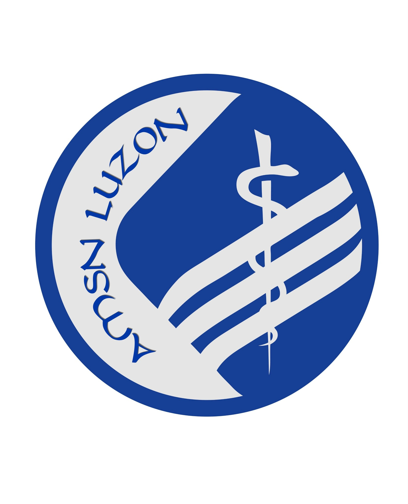
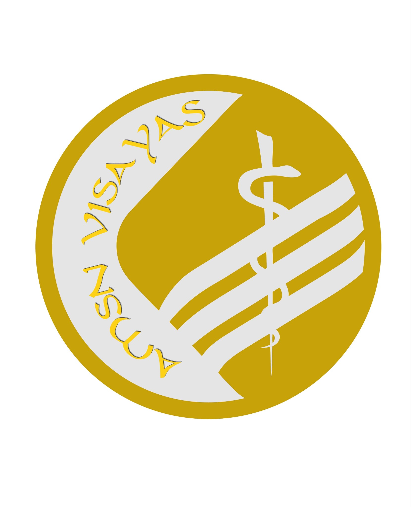

01
AMSN-PH REGION
Luzon
Connecting Adventist medical students across Luzon through regional fellowship, representation, mentorship, and collaborative programs.
Connect with Luzon →THE AMSN-PH NETWORK
AMSN-PH is organized across Luzon, Visayas, and Mindanao—connecting Adventist medical students through one national community of faith, fellowship, service, mentorship, and mission.
OUR REGIONAL STRUCTURE
Each region brings together medical students from different schools and local communities while remaining part of one AMSN-PH national network.

AMSN-PH REGION
Connecting Adventist medical students across Luzon through regional fellowship, representation, mentorship, and collaborative programs.
Connect with Luzon →
AMSN-PH REGION
Connecting Adventist medical students across the Visayas through regional fellowship, representation, mentorship, and collaborative programs.
Connect with Visayas →AMSN-PH REGION
Connecting Adventist medical students across Mindanao through regional fellowship, representation, mentorship, and collaborative programs.
Connect with Mindanao →ONE NETWORK
HOW IT WORKS
The three-region structure makes it easier for members to connect with students and leaders nearer to where they study while keeping programs, membership, and organizational identity connected nationally.
Local school communities, campus representatives, and historical student societies remain part of the wider AMSN-PH story, but the current public network structure is presented under the three regions: Luzon, Visayas, and Mindanao.